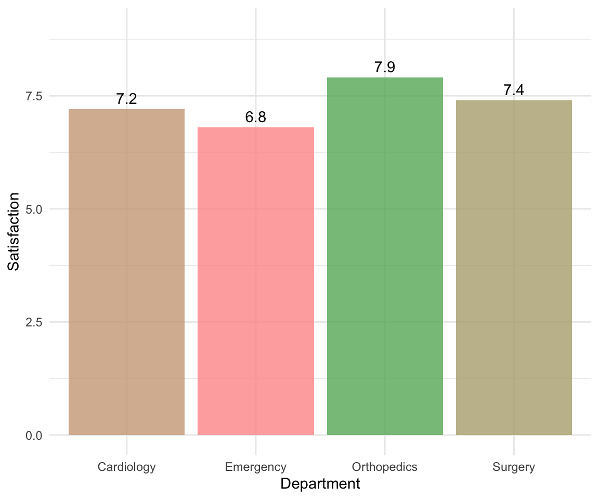
Basics of Data Visualization
Week 04
2026-02-04
Introduction
Why Visualization Matters
Compare these two formats:
Table View
| Department | Avg Sat | Wait |
|---|---|---|
| Cardiology | 7.2 | 45 |
| Emergency | 6.8 | 67 |
| Orthopedics | 7.9 | 38 |
| Surgery | 7.4 | 52 |
Visualization
Why Visualization Matters
Which format helped you identify the problem department faster?
- Most likely, the visualization! You probably spotted the shortest bar in less than a second.
- Both formats convey identical information, but visualization leverages our brain’s pre-attentive visual processing to make comparisons nearly instantaneous.
- We can easily process information from visualizations and maintain the key information.
Today’s Learning Goals
Data visualization helps you:
- Speed up understanding by revealing patterns instantly
- Bridge expertise gaps so anyone can grasp the message
- Drive action by making it obvious where attention is needed
What Makes a Good Visualization?
1. Truthful: Accurate representation without distortion
- ✅ Appropriate scales
- ❌ Truncated axes that distort relationships (See examples)


What Makes a Good Visualization?
2. Functional: Serves a clear purpose
- ✅ Right chart type for the data and question
- ❌ Pie chart with 15 slices (See examples)


What Makes a Good Visualization?
3. Insightful: Reveals hidden patterns
- ✅ Shows patterns, relationships, or anomalies
- ❌ Just displaying raw totals

Anscombe’s Quartet
What Makes a Good Visualization?
4. Clear: Easy to understand at a glance
- ✅ Descriptive titles and labels
- ❌ Color overload, missing legends


Topics for Today
- Overview: Choosing the right visualization
- The Grammar of Graphics (
ggplot2) - Essential Plot Types: Details & Code
- Practice: Applying skills to ED data
Overview: Choosing the Right Chart
1. Histogram
Distribution of one continuous variable
Use when:
- Understanding the shape (skew, outliers) of a single measure.
- e.g.,) “What is the typical patient wait time?”
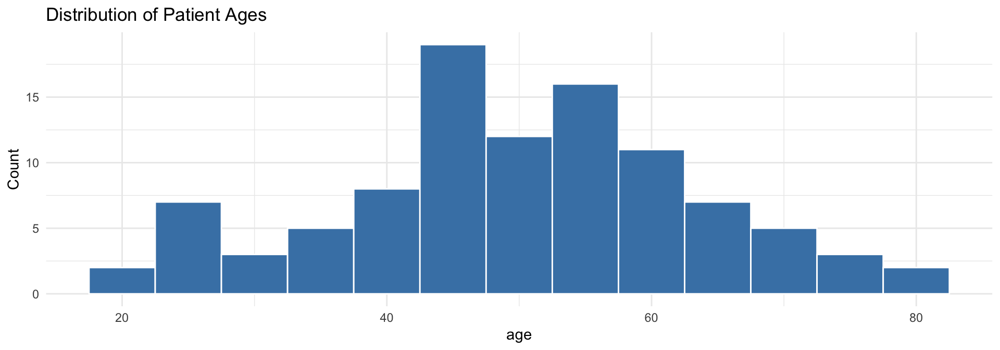
2. Bar Chart
Compare counts or values across categories
Use when:
- Comparing size or frequency between groups.
- e.g.,) “Which department has the most patients?”
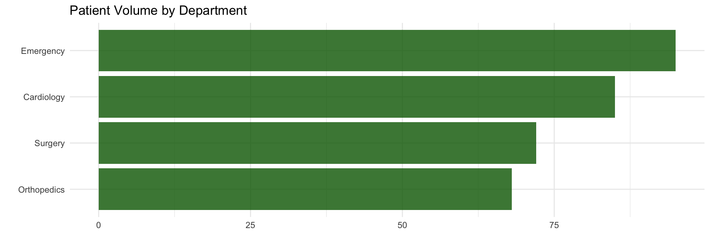
3. Box Plot
Compare distributions across groups
Use when:
- Comparing median and spread across groups.
- e.g.,) “Do satisfaction scores differ by department?”
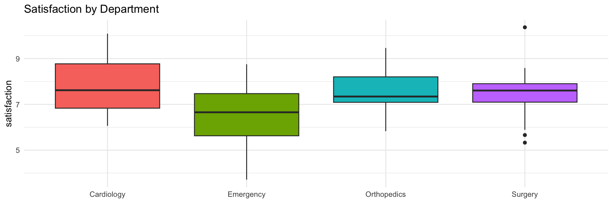
4. Scatterplot
Relationship between two continuous variables
Use when:
- Checking if X is related to Y.
- e.g.,) “Does longer wait time relate to lower satisfaction?”
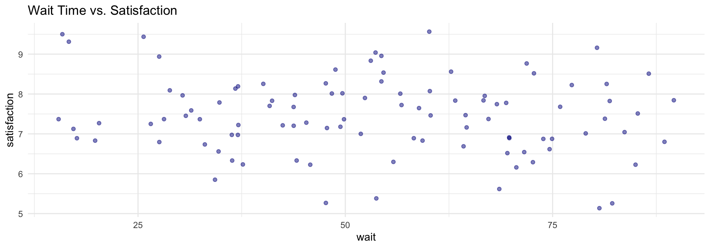
5. Line Chart
Trends over time
Use when:
- Tracking changes or seasonality.
- e.g.,) “How has patient volume changed this year?”
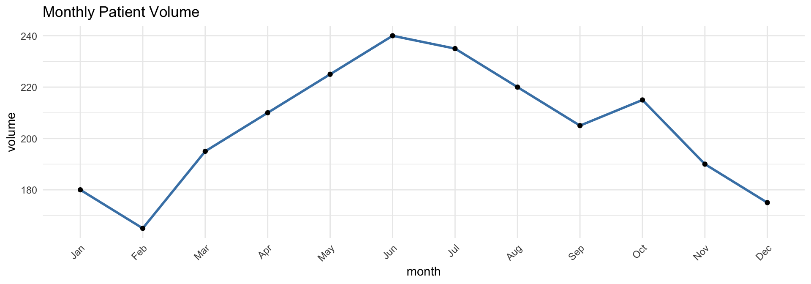
6. Faceted Plot
Compare patterns across groups
Use when:
- Comparing the same plot across different subgroups.
- e.g.,) “Does satisfaction distribution differ by department?”
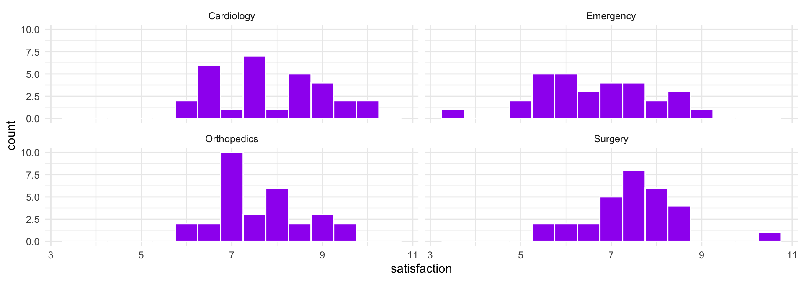
Quick Reference Table
| Your Question | Use This |
|---|---|
| “What’s the distribution of a single variable?” | Histogram |
| “How many cases in each category?” | Bar Chart |
| “How do groups compare?” | Box Plot / Faceted |
| “Is there a relationship between two variables?” | Scatterplot |
| “How does it change over time?” | Line Chart |
The Grammar of Graphics
Understanding ggplot2
Concept: Build plots layer by layer.
3 Essential Layers:
- Data: Your dataframe
- Aesthetics (
aes): Mapping variables to visuals (x, y, color, size) - Geometrics (
geom): The shape (bar, point, line)
Basic Template
Adding Layers
Start simple, then refine by adding layers with +:
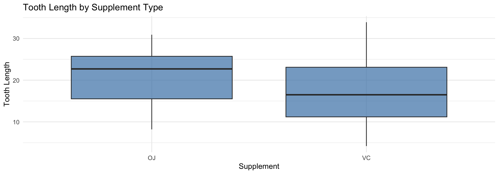
Common Geometries
| Type | Geom | Use Case |
|---|---|---|
| 1 Continuous | geom_histogram() |
Distribution |
| 1 Categorical | geom_bar() |
Counts |
| 2 Continuous | geom_point() |
Relationship |
| Continuous + Time | geom_line() |
Trend |
| Continuous + Cat | geom_boxplot() |
Comparison |
Other Useful Components
- Labels:
labs(title, x, y, color, caption) - Scales:
scale_x_continuous(),scale_color_brewer() - Facets:
facet_wrap(~ variable),facet_grid(row ~ col) - Themes:
theme_minimal(),theme_classic(),theme_bw()
Dataset for Today
Loading the Data
Patient Satisfaction Survey
# Demonstration data
patient_data <- read.csv("https://raw.githubusercontent.com/mba642-spring-26/mba642-spring-26.github.io/refs/heads/main/datasets/week04_demonstration_data.csv")
# Practice data (ED visits)
ed_data <- read.csv("https://raw.githubusercontent.com/mba642-spring-26/mba642-spring-26.github.io/refs/heads/main/datasets/week04_practice_data.csv")
ed_data$month <- factor(ed_data$month, levels = c("January", "February", "March", "April", "May", "June", "July", "August", "September", "October", "November", "December"))Dataset Preview
Dataset Variables
| Variable | Description | Type |
|---|---|---|
patient_id |
Unique patient identifier | Numeric |
age |
Patient age in years | Continuous |
department |
Hospital department | Categorical |
satisfaction_score |
Overall satisfaction (1-10) | Continuous |
wait_time_minutes |
Wait time before seeing provider | Continuous |
length_of_stay_days |
Hospital length of stay | Discrete |
Visualizing Single Variables
1. Histogram: Purpose
Purpose: Reveal the distribution pattern of continuous data
- Where values cluster
- Symmetric or skewed
- Potential outliers
When to use: Examining distribution of age, wait times, length of stay, or any continuous measure.
Demonstration: Basic Histogram
Question: What is the typical age of our patients?
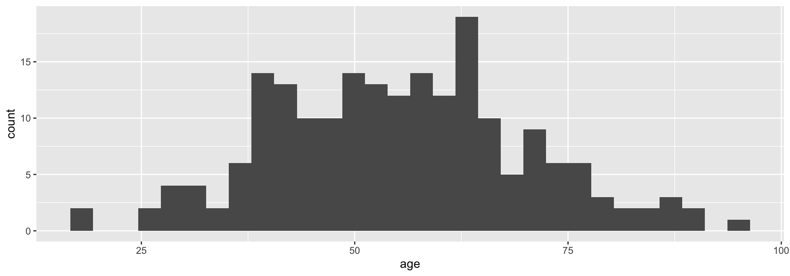
Demonstration: Improved Histogram
Adding styling and labels:
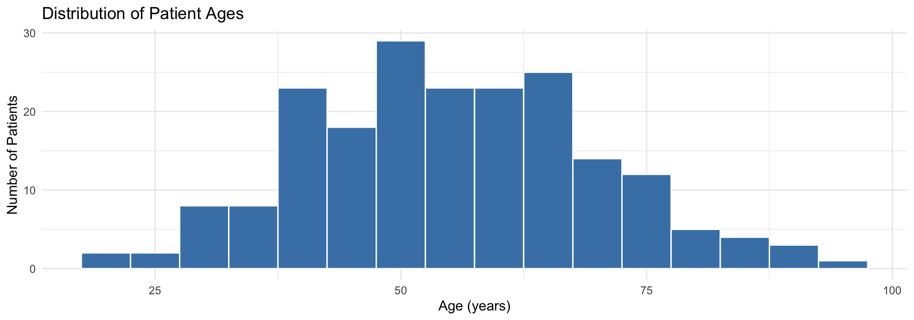
Components Used
geom_histogram(): Creates histogram by dividing continuous variable into binsbinwidth = 5: Controls bin size (each bar = 5-year age range)fillandcolor: Control bar appearance (interior and border)labs(): Adds title and axis labelstheme_minimal(): Applies clean appearance
Why Binwidth Matters
Important
The same data can tell different stories:
- Too narrow (binwidth = 1): Noisy, jagged patterns
- Too wide (binwidth = 20): Hides important features
- Just right: Reveals true distribution pattern
Interpreting Histograms
What story does the shape tell?
- Shape: Symmetric, right-skewed, or left-skewed?
- Center: Where do most values cluster?
- Spread: Are values tight or widely variable?
- Outliers: Any isolated bars far from the group?
- Modality: One peak (unimodal) or multiple peaks?
Practice: Histogram
Create a histogram showing the distribution of wait times (wait_time_minutes) in the ED data.
Question: What is the approximate center of the distribution? Is it symmetric or skewed?
2. Bar Chart: Purpose
Purpose: Compare frequencies or counts across categories
- Which groups are larger/smaller
- Also useful for comparing average values across measures
When to use: Patient counts by department, admission type, insurance status, or any categorical grouping.
Demonstration: Bar Chart
Question: How many patients in each department?
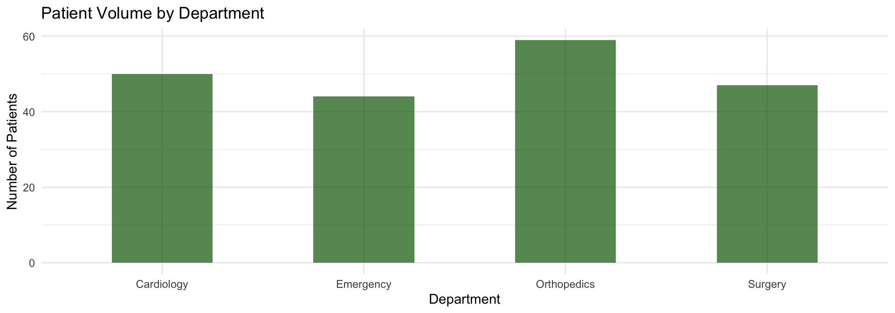
Components Used
geom_bar(): Automatically counts observations in each categoryalpha = 0.7: Controls transparency (0 = transparent, 1 = opaque)width = 0.5: Controls bar widthlabs(): Adds clear labels and title
Practice: Bar Chart
Create a bar chart showing the number of ED visits by month (month).
Question: Are visits evenly distributed across months, or are there patterns?
3. Box Plot: Purpose
Purpose: Compact five-number summary of distribution
- Minimum, 25th percentile, median, 75th percentile, maximum
- Ideal for identifying typical range and outliers
When to use: Comparing distributions across groups, identifying outliers in metrics.
Demonstration: Box Plot
Question: What are the typical satisfaction scores?
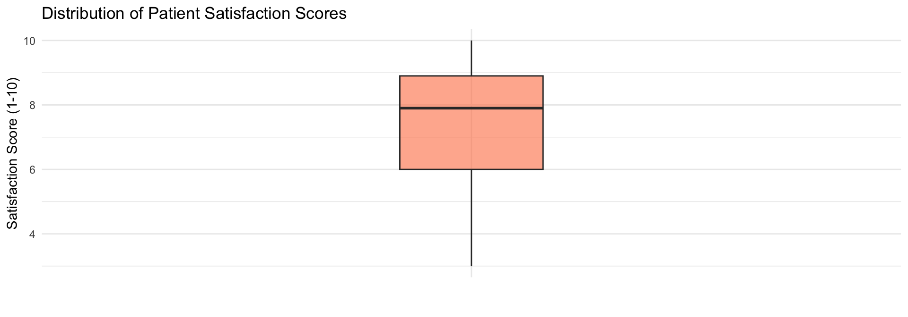
Interpreting Box Plots
A 5-Number Summary in one glance:
- Box (IQR): The middle 50% of data. Taller box = more variability.
- Line (Median): The exact middle value.
- Whiskers: The expected range (1.5× IQR).
- Dots (Outliers): Individual cases that are unusually high/low.
Interpreting Box Plots (continued)
Quick Guide
- Median position within box: If not centered, distribution is skewed
- Box height (IQR): Taller boxes indicate more variability
- Whisker lengths: Asymmetric whiskers suggest skewness
- Outliers: Many outliers may indicate data quality issues
Practice: Box Plot
Create a box plot showing the distribution of wait times (wait_time_minutes) in the ED.
Question: What is the approximate median wait time? Are there any outliers?
Visualizing Relationships
Why Relationships Matter
So far, we talked about how to visualize single variables (distributions, counts)
Now, let’s talk about relationships between variables
- Does one variable affect another?
- Do they move together or in opposite directions?
4. Scatterplot: Purpose
Purpose: Reveal relationships between two continuous variables
- Positive correlation (move together)
- Negative correlation (opposite directions)
- No clear pattern
When to use: Examining whether wait time relates to satisfaction, age relates to length of stay, etc.
Demonstration: Basic Scatterplot
Question: Does wait time affect satisfaction?
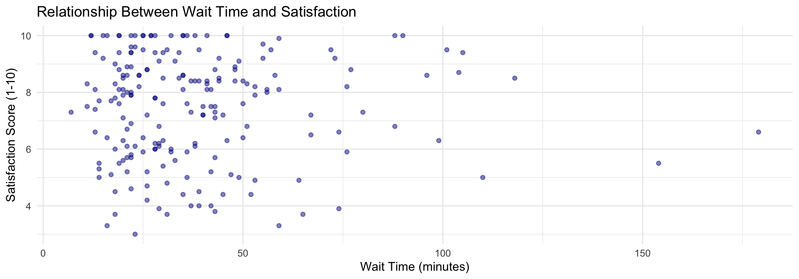
Demonstration: Adding Trend Line
ggplot(patient_data, aes(x = wait_time_minutes, y = satisfaction_score)) +
geom_point(alpha = 0.5, color = "darkblue") +
geom_smooth(method = "lm", se = TRUE, color = "red") +
labs(title = "Wait Time and Satisfaction with Linear Trend",
x = "Wait Time (minutes)", y = "Satisfaction Score (1-10)") +
theme_minimal()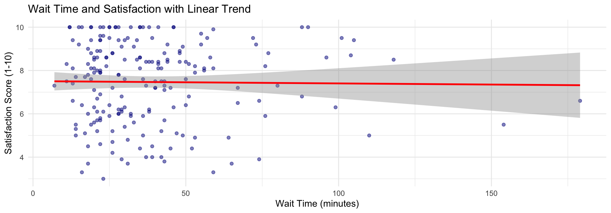
Components Used
geom_point(): Plots individual data pointsgeom_smooth(method = "lm"): Adds linear regression trend linese = TRUE: Displays confidence interval (shaded area)alpha = 0.5: Makes points semi-transparent for overlap visibility
Interpreting Scatterplots
Describing the relationship:
- Direction: Positive (upward /) or Negative (downward )?
- Strength: Strong (points tight around line) or Weak (scattered)?
- Form: Linear (straight) or Non-linear (curved)?
- Outliers: Any points far from the general pattern?
Practice: Scatterplot
Create a scatterplot showing the relationship between ED census (number of patients, ed_census) and wait times (wait_time_minutes). Add a trend line.
Question: Is there a positive or negative relationship? What does this mean for ED operations?
5. Line Chart: Purpose
Purpose: Reveal trends over time
- How a metric rises, falls, or cycles
- Essential for tracking performance and seasonal patterns
When to use: Monthly readmission rates, weekly patient volumes, daily ED wait times.
Line Chart Data
Creating monthly patient volume data:
Demonstration: Line Chart
Question: How does the patientvolume change over time?
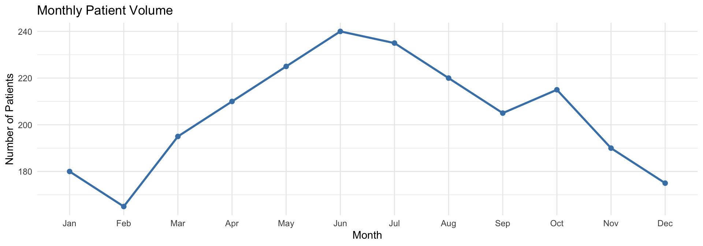
Components Used
geom_line(): Connects points in ordergeom_point(): Adds dots at each data pointgroup = 1: Tells ggplot to connect all points as one line (needed when x-axis is categorical, any numbers are fine)linewidth: Controls line thickness
Interpreting Line Charts
What to look for:
- Overall trend: Increasing, decreasing, or stable?
- Patterns: Seasonal cycles or regular fluctuations?
- Anomalies: Any sudden spikes or drops?
Practice: Line Chart
Create a line chart showing monthly average wait times using the ED data.
# First, summarize monthly data
monthly_summary <- ed_data %>%
group_by(month) %>%
summarize(avg_wait = mean(wait_time_minutes))
# Then create the line chart
ggplot(data = monthly_summary, mapping = aes(x = ___, y = ___, group = 1)) +
geom_line(color = "steelblue", linewidth = 1) +
geom_point(color = "steelblue", size = 2) +
labs(
title = "Monthly Average ED Wait Times",
x = "___",
y = "___"
) +
theme_minimal() +
theme(axis.text.x = element_text(angle = 45, hjust = 1))Question: Do you see any seasonal patterns in wait times?
Grouped Comparisons
Why Group Comparisons?
Compare distributions or relationships across categories:
- Do certain departments have higher satisfaction?
- Does the relationship between wait time and satisfaction differ by department?
Grouped Box Plot: Concept
Purpose: Compare distributions across groups side-by-side
- Reveal whether different groups have similar or different patterns
- Identify which groups need attention
Demonstration: Grouped Box Plot
Question: Do satisfaction scores differ by department?
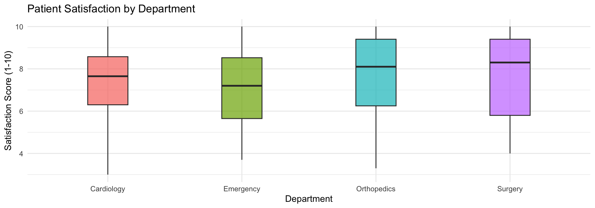
Practice: Grouped Box Plot
Create grouped box plots to compare wait times (wait_time_minutes) across different shifts (shift: Day, Evening, Night).
Question: Which shift tends to have the highest median wait time?
Bar Chart of Means: Concept
Purpose: Compare average values across groups
- Shows the mean of a continuous variable by category
- Good for presentations when comparing group averages
Demonstration: Bar Chart of Means
Question: What is the average satisfaction by department?
ggplot(patient_data, aes(x = department, y = satisfaction_score,
fill = department)) +
geom_bar(stat = "summary", fun = "mean", alpha = 0.8) +
labs(title = "Average Patient Satisfaction by Department",
x = "Department", y = "Average Satisfaction Score (1-10)") +
ylim(0, 10) +
theme_minimal() +
theme(legend.position = "none")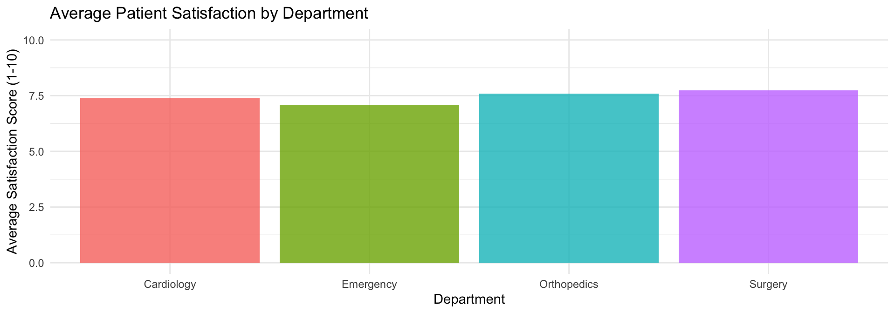
Components Used
geom_bar(stat = "summary", fun = "mean"): Calculates and plots the mean for each groupylim(): Sets y-axis limits (important for proper context)
Bar chart of means vs Box plot:
- Bar chart: Shows average clearly, good for presentations
- Box plot: Shows full distribution, better for exploration
Practice: Bar Chart of Means
Create a bar chart showing the average wait time (wait_time_minutes) for each acuity level (acuity_level).
# Fill in the blanks
ggplot(data = ed_data, mapping = aes(x = factor(___), y = ___,
fill = factor(___))) +
geom_bar(stat = "summary", fun = "___", alpha = 0.8) +
labs(
title = "Average ED Wait Times by Acuity",
x = "Acuity Level",
y = "Average Wait Time (minutes)"
) +
theme_minimal() +
theme(legend.position = "none")Question: Does the average wait time increase or decrease as acuity level goes up (1 to 5)?
- Note: Acuity 1 is most critical (should be fastest), Acuity 5 is least critical.
Grouped Scatterplot: Concept
Purpose: See if relationships differ across subgroups
- Add color or shape by group
- Separate trend lines for each group
Demonstration: Grouped Scatterplot
Question: Does the wait-satisfaction relationship differ by department?
ggplot(patient_data, aes(x = wait_time_minutes, y = satisfaction_score,
color = department)) +
geom_point(alpha = 0.6, size = 2) +
geom_smooth(method = "lm", se = FALSE) +
labs(title = "Wait Time and Satisfaction by Department",
x = "Wait Time (minutes)", y = "Satisfaction Score (1-10)",
color = "Department") +
theme_minimal()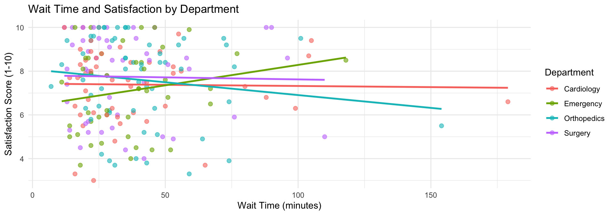
Interpreting Grouped Slopes
- Orthopedics: Negative relationship (satisfaction ↓ as wait ↑)
- Surgery & Cardiology: Nearly flat (wait time has little impact)
- Emergency: Slight positive trend (possible triage effect?)
This suggests different departments may need different improvement strategies.
Practice: Grouped Scatterplot
Create a scatterplot showing the relationship between wait time (wait_time_minutes) and length of stay (length_of_stay_hours), with points colored by shift (shift). Add trend lines without confidence intervals.
# Fill in the blanks
ggplot(data = ed_data, mapping = aes(x = ___, y = ___, color = ___)) +
geom_point(alpha = 0.5) +
geom_smooth(method = "lm", se = FALSE) +
labs(
title = "Wait Time vs. Length of Stay by Shift",
x = "Wait Time (minutes)",
y = "Length of Stay (hours)",
color = "Shift"
) +
theme_minimal()Question: Do the lines have similar slopes, or does the relationship change by shift?
Faceting: Small Multiples
Purpose: Create separate panels for each group
- Easier to see within-group patterns
- Cleaner than overlapping colors when many groups
Demonstration: Faceted Plot
ggplot(patient_data, aes(x = wait_time_minutes, y = satisfaction_score)) +
geom_point(alpha = 0.5, color = "steelblue") +
geom_smooth(method = "lm", se = TRUE, color = "darkred") +
facet_wrap(~ department, nrow = 2) +
labs(title = "Wait Time vs. Satisfaction Across Departments",
x = "Wait Time (minutes)", y = "Satisfaction Score (1-10)") +
theme_minimal()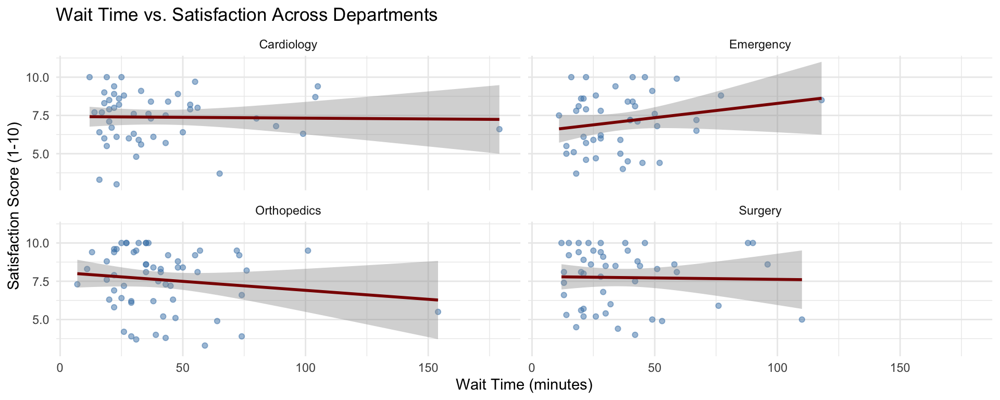
Components Used
facet_wrap(~ variable): Creates separate panels for each valuenrow = 2: Arranges panels in 2 rows- The
~symbol means “by” or “split by” (formula notation)
When to use faceting: When groups are too crowded on a single plot, or when you want to emphasize within-group patterns.
Practice: Faceted Plot
Create a faceted scatterplot showing the relationship between wait time (wait_time_minutes) and length of stay (length_of_stay_hours), with separate panels for each shift (shift).
# Fill in the blanks
ggplot(data = ed_data, mapping = aes(x = ___, y = ___)) +
geom_point(alpha = 0.5, color = "steelblue") +
geom_smooth(method = "lm", se = TRUE, color = "darkred") +
facet_wrap(~ ___) +
labs(
title = "Wait Time vs. Length of Stay Across Shifts",
x = "___",
y = "___"
) +
theme_minimal()Question: Compare this to the previous colored scatterplot. Which approach makes it easier to see within-shift patterns?
Summary
Quick Reference: Matching Chart to Question
| Your Question | Use This |
|---|---|
| “What’s the distribution?” | Histogram |
| “How many in each category?” | Bar Chart |
| “How do groups compare?” | Box Plot / Faceted |
| “Is there a relationship?” | Scatterplot |
| “How does it change over time?” | Line Chart |
Key Takeaways
- Visualization matters: Reveals patterns instantly
- Grammar of graphics: Data + Aesthetics + Geometry
- Choose the right chart for your question
- Start simple, then refine: Add layers iteratively
- Practice is key: The more you create, the better you get
Assignments
- Reflection: Please share your thoughts on the lecture (3 interesting and 3 confusing things)
- Assignment: Complete
week04_visualization_assignment.qmd
- Points: 10 points
- Due: Feb 8, 2026
- Submit: via Canvas
References
Key References
- Healy, K. (2018). Data Visualization: A Practical Introduction. Princeton University Press.
- Wickham, H., Navarro, D., & Pedersen, T. L. (2023). ggplot2: Elegant Graphics for Data Analysis. https://ggplot2-book.org/
- Wilke, C. O. (2019). Fundamentals of Data Visualization. https://clauswilke.com/dataviz/
Online Resources
- R Graphics Cookbook: https://r-graphics.org/
- ggplot2 documentation: https://ggplot2.tidyverse.org/
- Data-to-Viz (chart selection): https://www.data-to-viz.com/
Week 4 | Basics of Data Visualization in R